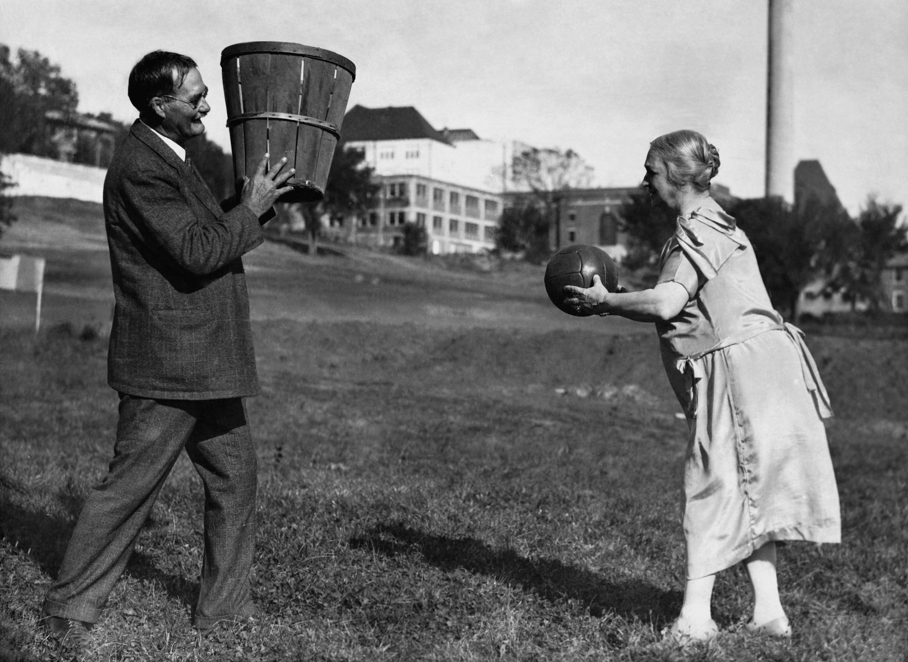

História do Basquete
Um pouco da história desse esporte incrível.
O BASQUETE ANTIGO
O basquete foi criado em 1891 pelo professor de educação física canadense James Naismith, nos Estados Unidos. Inicialmente jogado com uma bola de futebol e cestas de pêssego, o esporte tinha como objetivo manter os alunos ativos durante o inverno rigoroso.
Rapidamente o esporte se espalhou pelas escolas e universidades, tornando-se uma modalidade mundial.
O BASQUETE ATUAL
Hoje, o basquete é um dos esportes mais praticados no mundo. A NBA (National Basketball Association) é considerada a maior liga do planeta, com ídolos como Michael Jordan, LeBron James, Kobe Bryant e Kevin Durant.

No Brasil, o NBB (Novo Basquete Brasil) é o principal campeonato nacional, revelando talentos que inclusive chegam a jogar em ligas internacionais.

⬅ Voltar para a Página Principal